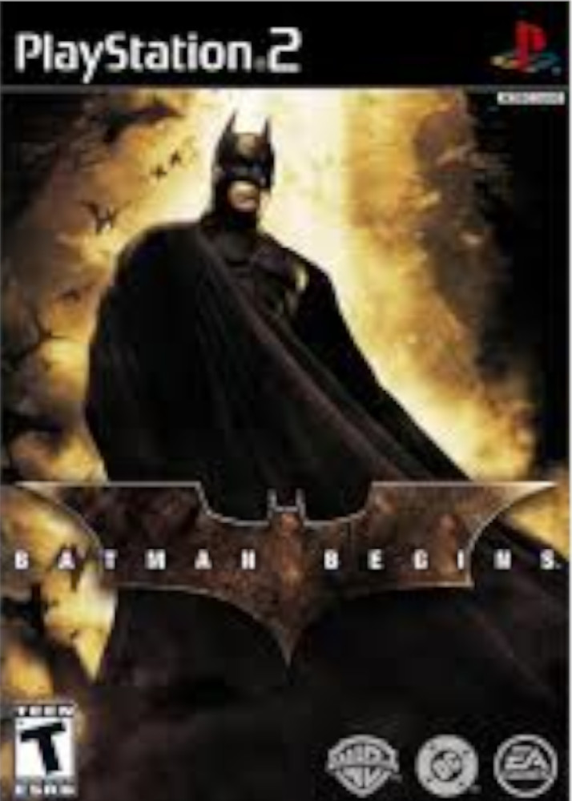
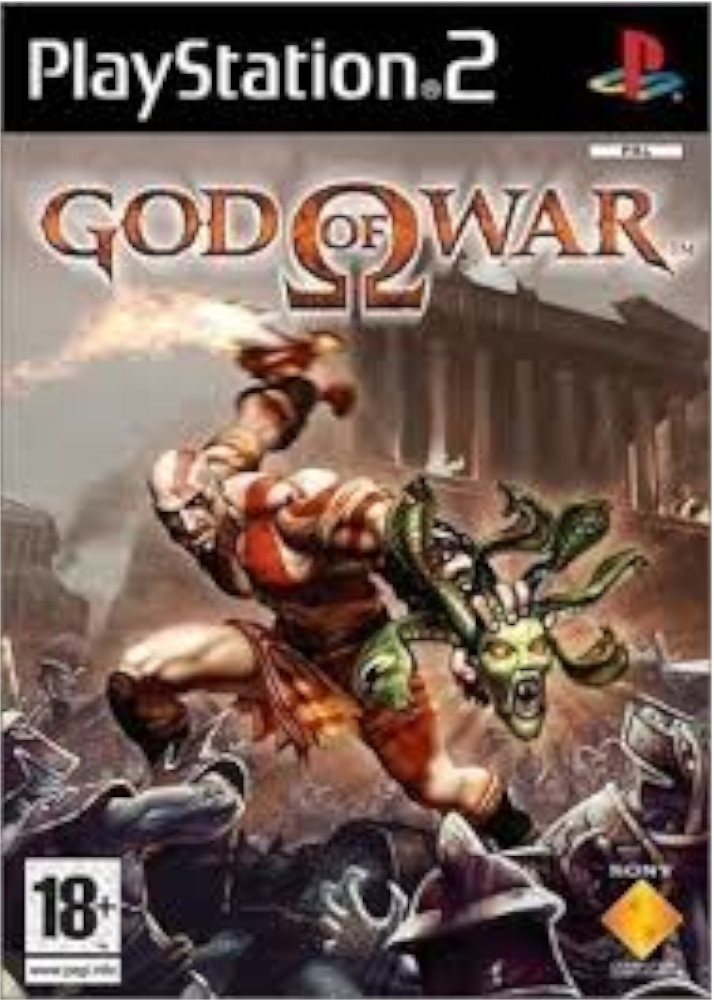
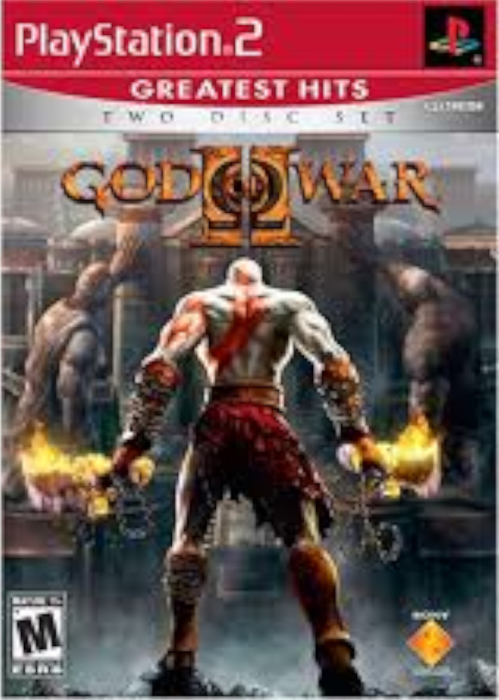
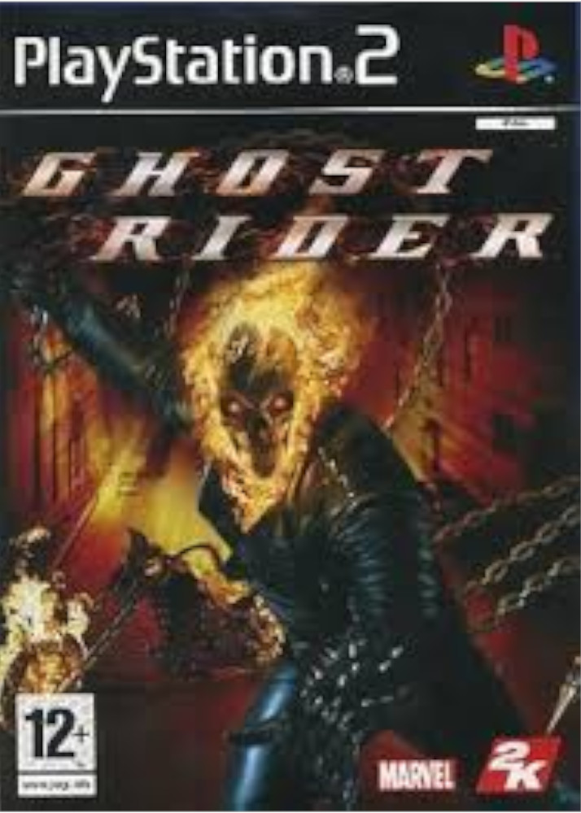
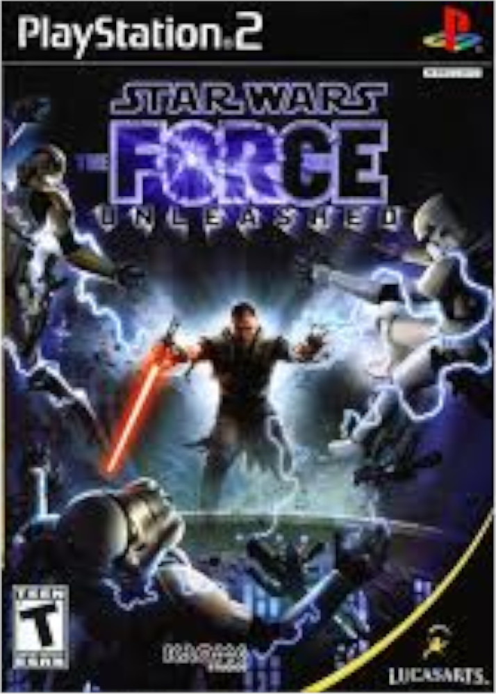

-
Batman Begins
Batman Begins é um jogo de videogame lançado em 14 de junho de 2005, um dia antes do lançamento de Batman Begins. Foi desenvolvido pela Eurocom e publicado pela Electronic Arts em conjunto com a Warner Bros. Interactive Entertainment e DC Comics.
Data de lançamento inicial: 14 de junho de 2005. Plataformas: PlayStation 2, Game Boy Advance, Nintendo GameCube, Xbox. Gênero: Jogo eletrônico de ação e aventura. -
God of War
God of War é um jogo eletrônico de ação-aventura e hack and slash desenvolvido pela Santa Monica Studio e publicado pela Sony Computer Entertainment (SCE).
Lançado pela primeira vez em 22 de março de 2005 para PlayStation 2, é o primeiro título da série com o mesmo nome e o terceiro cronologicamente.
Vagamente baseado na mitologia grega, é ambientado na Grécia antiga com a vingança sendo o tema central.
O jogador controla o protagonista Kratos, um guerreiro espartano que serve os deuses do Olimpo.
A deusa Atena atribui a Kratos a missão de matar Ares, o deus da guerra e seu ex-mentor, que enganou Kratos para que matasse sua própria esposa e filha.
Enquanto Ares ataca a cidade de Atenas por ódio a Atena, Kratos embarca em uma busca para encontrar o único objeto capaz de deter o deus de uma vez por todas: a lendária Caixa de Pandora.Data de lançamento inicial: AN: 22 de março de 2005
EU: 8 de julho de 2005
JP: 17 de novembro de 2005 Plataformas: PlayStation 2.
Conversões: PlayStation 3
PlayStation Vita Gênero: Ação-aventura hack and slash. -
God of War 2
God of War II é um jogo eletrônico de ação-aventura e hack and slash desenvolvido pela Santa Monica Studio e publicado pela Sony Computer Entertainment (SCE). Lançado pela primeira vez em 13 de março de 2007 para PlayStation 2, é o segundo jogo da franquia God of War e o sexto em ordem cronológica, sendo a continuação de God of War (2005). O jogo é vagamente baseado na mitologia grega e ambientado na Grécia Antiga, com a vingança sendo o tema central. O personagem do jogador é o protagonista Kratos, o novo deus da guerra que tomou o lugar de Ares depois de ter o matado. Kratos é traído por Zeus, o rei dos deuses do Olimpo, que tira dele sua divindade e o mata. Lentamente arrastado para o submundo, ele é salvo pela titã Gaia, que o instrui a encontrar as Irmãs do Destino, pois elas possuem o poder para fazer Kratos voltar no tempo, impedir a traição de Zeus e consequentemente sua morte.
Data de lançamento inicial: PlayStation 2 AN: 13 de março de 2007 EU: 27 de abril de 2007 JP: 25 de outubro de 2007 Plataformas: PlayStation 2. Conversões: PlayStation 3 PlayStation Vita Gênero: Ação-aventura hack and slash. -
Motoqueiro Fantasma
Ghost Rider é um jogo de videogame baseado no filme de mesmo nome. O enredo do jogo é uma sequência do filme, e foi escrito pelos roteiristas da Marvel Garth Ennis e Jimmy Palmiotti. Os jogadores podem jogar com o Motoqueiro Fantasma, a pé, ou na Hellcycle. Os vilões presentes são os do filme e quadrinhos. Tais são os vilões Espantalho, Lilith, Blacaute, Vingança, Coração Negro e Mefisto para GBA.
Data de lançamento inicial: 2007 Plataformas: PlayStation 2 PlayStation Portable Game Boy Advance Gênero: Ação/Aventura. -
Star Wars: The Force Unleashed
Star Wars: The Force Unleashed é um jogo eletrônico de videogame do projeto multimídia The Force Unleashed da LucasArts. Foi desenvolvido para PlayStation 2, PlayStation 3, Wii, PC, Xbox 360, iPhone, N-Gage, Nintendo DS, PSP e aparelhos celulares equipados com Java. O jogo foi lançado na América do Norte em 16 de setembro, na Austrália e sul da Ásia em 17 de setembro e na Europa em 19 de Setembro de 2008. Um demo do jogo para PlayStation 3 d Xbox 360 foi disponibilizada para download em 21 de agosto, logo depois, um nível foi disponibilizado para download nos dois sistemas em 5 de dezembro. Após o lançamento do jogo, a LucasArts anunciou o lançamento de uma nova versão do jogo, desta vez para PC e Mac também além das plataformas já citadas, intitulado Star Wars: The Force Unleashed-Ultimate Sith Edition, que promete dar continuidade a história.
Data de lançamento inicial: 16 de setembro de 2008 Plataformas: PlayStation 2, PSP, PlayStation 3, Wii, PC, Xbox 360, iPod Touch, iPhone, Celular, N-Gage, Nintendo DS, Mac OS X Gênero: Ação, Hack and slash.